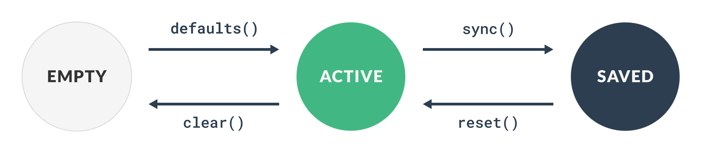

Models and Collections for Vue.js

The relationship between data, component states, and the actions that affect them is a fundamental and unavoidable layer to manage when building a component or application. Vue does not provide a way to structure and encapsulate data, so most projects use plain objects and implement their own patterns to communicate with the server. This is perfectly fine for small applications, but can quickly become a lot to manage when the size of your project and team increases.
This library takes care of this for you, providing a single point of entry and a consistent API:
- Communicating with the server to fetch, save, and delete.
- Managing model states like empty, active and saved.
- Managing component states like loading, saving, and deleting.
When we started to use Vue more extensively at Figured, we noticed that every team had a slightly different way of doing this, so we decided to develop a standard solution that is flexible enough to accommodate most use cases in a consistent way, while preserving reactivity and testability.
The basic concept is that of a Model and a Collection of models. Data and component state is managed automatically, and CRUD is built-in. A classic example would be a to-do list, where each task would be a model and the list of tasks would be a collection.
Installation
Install
Add the vue-mc package to your package dependencies:
npm install --save vue-mc
# Or
yarn add vue-mcBasic Usage
You should extend the base classes to create appropriate models and collections for your data. The example we’ll use is a basic task list, consisting of a list (Collection) of tasks (Model).
Extending the base classes
import {Model, Collection} from 'vue-mc'
/**
* Task model
*/
class Task extends Model {
// Default attributes that define the "empty" state.
defaults() {
return {
id: null,
name: '',
done: false,
}
}
// Attribute mutations.
mutations() {
return {
id: (id) => Number(id) || null,
name: String,
done: Boolean,
}
}
// Attribute validation
validation() {
return {
id: integer.and(min(1)).or(equal(null)),
name: string.and(required),
done: boolean,
}
}
// Route configuration
routes() {
return {
fetch: '/task/{id}',
save: '/task',
}
}
}
/**
* Task collection
*/
class TaskList extends Collection {
// Model that is contained in this collection.
model() {
return Task;
}
// Default attributes
defaults() {
return {
orderBy: 'name',
}
}
// Route configuration
routes() {
return {
fetch: '/tasks',
}
}
// Number of tasks to be completed.
get todo() {
return this.sum('done');
}
// Will be `true` if all tasks have been completed.
get done() {
return this.todo == 0;
}
}Creating a new instances
// Create a new empty task list.
let tasks = new TaskList(); // (models, options)
// Create some new tasks.
let task1 = new Task({name: 'Tests'});
let task2 = new Task({name: 'Documentation'});
let task3 = new Task({name: 'Publish'});Adding tasks to the list
// Add the tasks to the collection.
tasks.add([task1, task2, task3]);
// You can add plain objects directly to the collection.
// They will automatically be converted to `Task` models.
let task1 = tasks.add({name: 'Tests'});
let task2 = tasks.add({name: 'Documentation'});
let task3 = tasks.add({name: 'Publish'});
// You can add multiple models at the same time.
let added = tasks.add([
{name: 'Tests'},
{name: 'Documentation'},
{name: 'Publish'},
]);Rendering a task input section
class="task-form" :class="{saving: task.saving}">
type="text" v-model="task.name">
v-for="(error in task.errors.name)">
type="checkbox" v-model="task.done">
v-on:click="task.save">Save
Rendering a task row
class="task">
{{ task.$.name }}
{{ task.$.done }}
Rendering the list
class="tasks">
v-for="task in tasks.models" :task="task" :key="task.id">
Models
Creating instances
Model instances can be created using the new keyword. The default constructor
for a model accepts three optional parameters: attributes, collection, and options.
let model = new Model(attributes = {}, collection = null, options = {});Attributes
Attributes will be merged with the default attributes as defined by the defaults() method.
If no attributes are provided on construction, the model will represent an “empty” state.
Important: You should define a default value for every attribute.
// Create a new task with initial attributes.
let task = new Task({name: 'Task #1'});
task.name; // 'Task #1'
task.done; // falseCollection
The collection parameter allows you to specify one or more collections that the
model belongs to. A common pattern where this comes in handy is when you are creating
a new model that should be added to a collection when it is created on save.
For example, a user clicks a “New Task” button which shows a form to fill out a new task.
If we create a new Task model and set tasks as its collection, it will automatically
be added to tasks when saved successfully.
onCreateNew() {
this.task = new Task({}, tasks);
}Options
The options parameter allows you to set the options of a model instance. These
can be any of the default options or something specific to your model.
To get the value of an option, use getOption(name). You can also set an option
later on using setOption(name, value) or setOptions(options).
You should define a model’s default options using the options() method:
class Task extends Model {
options() {
return {
editable: false,
}
}
}
let task1 = new Task({}, null, {editable: true});
let task2 = new Task({}, null);
task1.getOption('editable'); // true
task2.getOption('editable'); // falseAvailable options
| Option | Type | Default | Description |
|---|---|---|---|
methods |
Object |
See below | HTTP request methods. |
identifier |
String |
"id" |
The attribute that should be used to uniquely identify this model, usually a primary key like "id". |
overwriteIdentifier |
Boolean |
false |
Whether this model should allow an existing identifier to be overwritten on update. |
routeParameterPattern |
Regex |
/\{([^}]+)\}/ |
Route parameter matching pattern. |
patch |
Boolean |
false |
Whether this model should perform a “patch” on update (only send attributes that have changed). |
saveUnchanged |
Boolean |
true |
Whether this model should save even if no attributes have changed. If set to false and no changes have been made, the request will be considered a success. |
useFirstErrorOnly |
Boolean |
false |
Whether this model should only use the first validation error it receives, rather than an array of errors. |
validateOnChange |
Boolean |
false |
Whether this model should validate an attribute after it has changed. This would only affect the errors of the changed attribute and will only be applied if the value is not blank. |
validateOnSave |
Boolean |
true |
Whether this model should be validated before it is saved. This will cause the request to fail if validation does not pass. This is useful when you only want to validate on demand. |
validateRecursively |
Boolean |
true |
Whether this model should validate other objects within its attribute tree. The result is implicit recursion as each of those instances will also validate their trees, etc. |
mutateOnChange |
Boolean |
false |
Whether this model should mutate a property as it is changed before it is set. This is a rare requirement because you usually don’t want to mutate something that you are busy editing. |
mutateBeforeSync |
Boolean |
true |
Whether this model should mutate all attributes before they are synced to the “saved” state. This would include construction, on fetch, and on save success. |
mutateBeforeSave |
Boolean |
true |
Whether this model should mutate all attributes before a “save” request is made. |
Default request methods
{
...
"methods": {
"fetch": "GET",
"save": "POST",
"update": "POST",
"create": "POST",
"patch": "PATCH",
"delete": "DELETE",
}
}Identifiers
Models usually have an identifier attribute to uniquely identify them, like a primary key in the database.
The default identifier attribute is "id", but you can override this with the identifier option.
class Task extends Model {
options() {
return {
identifier: 'uuid',
}
}
}Collections
Models can be registered to collections, which implies that the model “belongs to” that collection. If a model is created or deleted, it will automatically be added or removed from every collection it is registered to.
When you add a model to a collection, it will automatically be registered to that collection,
but there may be cases where you want to manually register one or more collections. You can
do this with the registerCollection method, which accepts either an instance or an array of collections.
Attempting to register the same collection more than once has no effect.
Attribute states
Models maintain three separate attribute states: empty, active, and saved.
Empty
The empty state is defined by the model’s defaults() method, and is automatically
assigned to the active state when the model is created or cleared.
Active
The active state is accessed directly on the model, eg. task.name.
This is also the attributes that will be sent to the server when the model is saved.
You can mess with this data as much as you want, then either call clear() to revert
back to the empty state, or reset() to revert back to the saved state.
Saved
The saved state is the “source of truth”, which usually reflects what’s in the database.
You can use sync() to apply the active state to the saved state, which happens automatically
when the model is saved successfully, and when constructed.

Data access
Active attributes
You can access the active state directly on the instance, or with the get(attribute, default) method which
allows you to specify a default value to fall back on if the attribute does not exist.
It’s safe to set the value of an existing attribute directly, or you can use set(attribute, value). Multiple attributes may be updated by passing an object to set().
Important: You must use set if you’re setting an attribute that doesn’t exist on the model yet.
let task = new Task({name: 'Write some tests!'})Read
task.name; // 'Write some tests!'
task.get('name'); // 'Write some tests!'
task.get('author', 'Unknown'); // 'Unknown'Write
task.name = 'Write better tests';
// Set an attribute that doesn't exist on the model.
task.set('alias', 'Tests');
// Set multiple attributes
task.set({ name: 'My Task', description: 'Do something'});Saved attributes
You can access the saved state with the saved(attribute, default) method or directly on the instance using the $ accessor.
This is useful when you want to display a saved value while editing its active equivalent, for example when you want to show a
task’s saved name in the list while editing the name (which is bound to the active state).
If you don’t bind using $ when rendering the list, the task’s name will change on-the-fly as you type.
Important: You should never write to the saved state directly.
let task = new Task({name: 'Get some sleep?'})
// Update the active state.
task.name = 'Do more work!';
task.$.name; // 'Get some sleep?'
task.saved('name'); // 'Get some sleep?'
task.saved('author', 'Unknown'); // 'Unknown'Changed attributes
If you’d like to know which fields have changed since the last time the model was synced,
you can call changed(), which returns either a list of attributes names or false if no
values have changed.
v-model
You should always use the active state with v-model.
id="name" type="text" v-model="task.name">
id="done" type="checkbox" v-model="task.done"> v-bind
You can use v-bind with either the active or the saved state.
{{ task.$.name }}
id="name" type="text" v-model="task.name"> Mutators
You can define functions for each attribute to pass through before they are set on the model, which makes things like type coercion or rounding very easy.
Mutators are defined by a model’s mutations() method, which should return an
object mapping attribute names to their mutator functions. You can use an array
to create a pipeline, where each function will receive the result of the previous.
Mutator functions should accept value and return the mutated value.
mutations() {
return {
id: (id) => _.toNumber(id) || null,
name: [_.toString, _.trim],
done: Boolean,
}
}See options that determine when mutations should be applied.
Validation
There are already some awesome validation libraries for Vue such as
vee-validate and
vuelidate, which you are more than welcome to keep using. As an alternative, validation is also built into vue-mc.
The plan was the keep our templates as clean as possible; validation errors should be presented by the template, but validation rules should be defined on the model alongside the data.
To do this, we use the validation() method.
// Validation rules
import {
boolean,
equal,
integer,
min,
required,
string,
} from 'vue-mc/validation'
class Task extends Model {
defaults() {
// id, name, done
}
validation() {
return {
id: integer.and(min(1)).or(equal(null)),
name: required.and(string),
done: boolean,
}
}
options() {
return {
// Whether this model should validate an attribute that has changed.
// This would only affect the errors of the changed attribute and
// will only be applied if the value is not a blank string.
validateOnChange: false,
// Whether this model should be validated before it is saved, which
// will cause the request to fail if validation does not pass. This
// is useful when you only want to validate on demand.
validateOnSave: true,
// Whether this model should validate models and collections within
// its attribute tree. The result is implicit recursion as each of
// those instances will also validate their trees, etc.
validateRecursively: true,
}
}
}Configuration
A validation rule is a function that accepts a value, attribute and the model under validation,
and returns an error message if the value is not valid. You can specify one rule or an array
of rules for each attribute. Using multiple rules means that there might be multiple error
messages per attribute, which is why error messages are always attached to the attribute
as an array.
The rules provided by vue-mc/validation are chainable with and and or, and allow you to override
the default message using format(message|template).
For example, if we had an attribute called secret
which must be an alphanumeric string with a length between 2 and 8 characters, or null, we can create a rule for that like this:
validation() {
return {
secret: string.and(length(2, 8)).and(alpha).or(equal(null));
}
}You can also move the null check to the front of the chain, like this:
validation() {
return {
secret: isnull.or(string.and(length(2, 8)).and(alpha));
}
}The equivalent of this rule using a function might be something like this:
validation() {
return {
secret: (value) => {
if (_.isNull(value)) {
return;
}
if ( ! _.isString(value)) {
return "Must be a string";
}
if (value.length < 2 || value.length > 8) {
return "Must have a length between 2 and 8";
}
},
}
}If an invalid value for secret is set, the errors property of the model would
then be updated.
model.secret = 5;
model.errors; // {secret: ['Must be a string']}If we separated those rules out into individual rules in an array, we would see all three errors because they would be treated as two separate rules rather than a single chained rule. One thing we’d lose out on here is the “or null” part of the condition, unless we add that to each rule in the array.
validation() {
return {
secret: [string, length(2, 8), alpha],
}
}
model.secret = 5;
model.errors; // {secret: [
// 'Must be a string',
// 'Must have a length between 2 and 8',
// 'Can only use letters'
// ]}Order of operations
- Check the base rule first and return its message if it fails.
- Check if all the
andrules pass in the order that they were chained. - Check if any of the
orrules pass in the order that they were chained.
Nested validation
If a model’s "validateRecursively" option is set to true, attributes that
have a validate method will also be validated. If any descendant fails validation,
the parent will also fail. You can however still set other rules for the nested attribute,
but this will not override the default nested validation behaviour.
Available rules
| after(date) |
Checks if the value is after a given date string or Date object.
|
| alpha | Checks if a value only has letters. |
| alphanumeric | Checks if a value only has letters or numbers. |
| array | Checks if a value is an array. |
| ascii | Checks if a value is a string consisting only of ASCII characters. |
| base64 | Checks if a value is a valid Base64 string. |
| before(date) |
Checks if a value is before a given date string or Date object.
|
| between(min, max) | Checks if a value is between a given minimum or maximum. |
| boolean |
Checks if a value is a boolean (strictly true or false).
|
| creditcard | Checks if a value is a valid credit card number. |
| date | Checks if a value is parseable as a date. |
| dateformat(format) | Checks if a value matches the given date format. |
| defined |
Checks if a value is not undefined.
|
| Checks if a value is a valid email address. | |
| empty | Checks if value is considered empty. |
| equal(value) |
Alias for equals.
|
| equals(value) | Checks if a value equals the given value. |
| gt(min) | Checks if a value is greater than a given minimum. |
| gte(min) | Checks if a value is greater than or equal to a given minimum. |
| integer | Checks if a value is an integer. |
| ip | Checks if a value is a valid IP address. |
| isblank | Checks if a value is a zero-length string. |
| isnil |
Checks if a value is null or undefined.
|
| isnull |
Checks if a value is null.
|
| iso8601 | Checks if a value is a valid ISO8601 date string. |
| json | Checks if a value is valid JSON. |
| length(min, max) |
Checks if a value's length is at least min and no more than max (optional).
|
| lt(max) | Checks if a value is less than a given maximum. |
| lte(max) | Checks if a value is less than or equal to a given maximum. |
| match(pattern) |
Checks if a value matches a given regular expression string or RegExp.
|
| max(max) |
Alias for lte.
|
| min(min) |
Alias for gte.
|
| negative | Checks if a value is negative. |
| not(value) | Checks if a value is not any of one or more given values. |
| number |
Checks if a value is a number (integer or float), excluding NaN.
|
| numeric |
Checks if a value is a number or numeric string, excluding NaN.
|
| object | Checks if a value is an object, excluding arrays and functions. |
| positive | Checks if a value is positive. |
| required |
Checks if a value is present, ie. not null, undefined, or a blank string.
|
| same(other) | Checks if a value equals another attribute's value. |
| string | Checks if a value is a string. |
| url | Checks if a value is a valid URL string. |
| uuid | Checks if a value is a valid UUID |
Custom validation rules
You can create your own chainable rules that use the same interface as the
standard rules. All you need to do is define a name, a test method,
and data that should be passed to its error message template.
import { validation } from 'vue-mc'
// Create a rule that checks if a value is odd.
const odd = validation.rule({
name: 'odd',
test: value => value & 1,
});
// Create a rule that checks if a value is divisible by another.
const divisibleBy = (divisor) => {
return validation.rule({
name: 'divisible',
test: value => value % divisor == 0,
data: {divisor},
});
}
// You can now use these rules in the same way as the standard ones.
let rule = odd.and(divisibleBy(3));
// Remember to add default messages for the rules.
validation.messages.set('odd', 'Must be an odd number');
validation.messages.set('divisible', 'Must be divisible by ${divisor}');Messages
Default error messages are defined for all available validation rules. You can override
these on a per-rule basis using a rule’s format method, which accepts either a
string or a function that returns a formatted message. Functions will receive a data
object which contains at least value and attribute, along with any other contextual
data that the rule provides.
String formats will automatically be compiled by _.template.
let rule1 = string.and(length(2, 8)).format("${value} must be a secret!");
let rule2 = string.and(length(2, 8)); // This will still use the default message.You can overwrite global the default for a specific rule by using the
set(name, format, locale = null) method of the validation object that is exported
by vue-mc. If a locale is not given, it will use the default locale.
import { validation } from 'vue-mc';
validation.messages.set('email', '${value} must be an email, please');Localisation
You can change the language of vaidation error messages by setting the locale.
import { validation } from 'vue-mc';
// Set a message on the "af" locale.
validation.messages.set('email', "${value} moet 'n email adres wees", 'af');
// Set the current locale to "af".
// The formatted messages for `email` will now be the "af" version.
validation.messages.locale('af');
validation.messages.get('email', {value: 5}); // "5 moet 'n email adres wees"The default locale is null, which is used as a fallback for when a message is not
defined for the current locale. However, a message might be defined under a language like "es" (Spanish),
but the locale set to "es-ar" (Spanish - Argentina). If a requested message does not exist
under the specific locale, it will fall back to the language, and only then to the default locale.
Note: You can use window.navigator.language to detect the browser’s language.
Languages
You can import entire language packs and register them using messages.register(bundle).
import { validation } from 'vue-mc'
import { pt_br } from 'vue-mc/locale'
// Register the language bundle.
validation.messages.register(pt_br);
// Set the locale.
validation.messages.locale('pt-br');An added bonus of language packs is that it allows you to register your own
messages using a locale that describes your application rather than a language.
The structure of a language pack is an object that has a locale and some messages.
const pack = {
locale: 'my-app',
messages: {
email: 'No good, try a different one',
...
}
}
validation.messages.register(pack);Supported Locales
| Locale | Language |
|---|---|
| af_za | Afrikaans |
| da_dk | Danish |
| en_us | English (US) |
| id_id | Indonesian |
| nl_nl | Dutch |
| pl_PL | Polish |
| pt_br | Portuguese (Brazil) |
| ru_ru | Russian |
Routes
Routes are defined in a model’s routes() method. Expected but optional route keys
are fetch, save, and delete. Route parameters are returned by getRouteParameters().
By default, route values are URL paths that support parameter interpolation with curly-brace syntax,
where the parameters are the model’s active attributes and options.
class Task extends Model {
routes() {
save: '/task/{id}',
}
}Note: You can use getURL(route, parameters = {}) to resolve a route’s URL directly.
Using a custom route resolver
A route resolver translates a route value to a URL. The default resolver assumes
that route values are URL paths, and expects parameters to use curly-brace
syntax. You can use a custom resolver by overriding getRouteResolver(), returning a function
that accepts a route value and parameters.
For example, if you are using laroute, your base model might look like this:
class Task extends Model {
routes() {
save: 'task.save', // Defined in Laravel, eg. `/task/save/{id}`
}
getRouteResolver() {
return laroute.route;
}
}Events
You can add event listeners using on(event, listener). Event context will always
consist of at least target, which is the model that the event was emitted by.
Event names can be comma-separated to register a listener for multiple events.
task.on('reset', (event) => {
// Handle event here.
})
task.on('reset, sync', (event) => {
// Handle event here.
})reset
When the active state is reset to the saved state.
attributes– The attribute names that were reset.before– A copy of the active state before the attributes were reset.after– A copy of the active state after the attributes were reset.
sync
When the active state is applied to the saved state.
attributes– The attribute names that were synced.before– A copy of the saved state before the attributes were synced.after– A copy of the saved state after the attributes were synced.
change
When a value is set on the model that is different to what it was before. This event will also be emitted when a model is constructed with initial values.
attribute– The name of the attribute that was changed.previous– The previous value of the attribute.value– The new value of the attribute.
create
After a model is saved successfully, where the model was created.
update
After a model is saved successfully, where the model was updated.
fetch
Before a model’s data is fetched.
The request will be cancelled if any of the listeners return false, or skipped
if the request is part of a batch within a collection.
Events will also be fired after the request has completed:
fetch.successfetch.failurefetch.always
save
Before a model is saved.
The request will be cancelled if any of the listeners return false, or skipped
if the request is part of a batch within a collection.
Events will also be fired after the request has completed:
save.successsave.failuresave.always
delete
Before a model is deleted.
The request will be cancelled if any of the listeners return false, or skipped
if the request is part of a batch within a collection.
Events will also be fired after the request has completed:
delete.successdelete.failuredelete.always
Requests
Models support three actions: fetch, save and delete. These are called
directly on the model, and return a Promise. The resolve callback will
receive a response which could be null if a request was cancelled. The reject
callback will receive an error which should always be set.
// These are the default options, which will be merged with those provided.
let options = {
url : this.getSaveURL(),
method : this.getSaveMethod(),
data : this.getSaveData(),
params : this.getSaveQuery(),
headers : this.getSaveHeaders(),
};
model.save(options).then((response) => {
// Handle success here
}).catch((error) => {
// Handle failure here
})Fetch
Model data is usually either already in scope or part of a collection of data, but you can also fetch attribute data for a specific model. Response data is expected to be an object of attributes which will replace the active attributes and sync the saved state.
When a fetch request is made, loading will be true on the model, and false
again when the data has been received and assigned (or if the request failed).
This allows the UI to indicate a loading state.
The request will be ignored if loading is already true when the request is made.
Save
Saving a model either performs a create or update, depending on whether the model is
already persisted. The default criteria that qualifies a response as created is to
check if the model now has an identifier but didn’t before, or if the response status was a 201 Created.
If the model was created, it will automatically be added to all registered collections.
If you’d like to enable patching you can override shouldPatch(). The request will then
only consist of attributes that have changed, and abort early if no changes have been made.
When a save request is made, saving will be true on the model, and false
again when the response has been handled (or if the request failed).
The request will be ignored if saving is already true when the request is made,
which prevents the case where clicking a save button multiple times results in more
than one request.
Response
In most case you would return the saved model in the response,
so that server-generated attributes like date_created or id can be applied.
Response data should be either an object of attributes, an identifier, or nothing at all.
If an object is received, it will replace the active attributes and sync the saved state.
If an identifier is returned it will only set the identifier.
You can override identifier handling with parseIdentifier(data) and isValidIdentifier(identifier).
If the response is empty, it will be assumed that the active state is already the source of truth. This makes sense when the model doesn’t use any server-generated attributes and doesn’t use an identifier.
Validation
Validation errors are automatically set on a model and can be accessed as model.errors.
They are set when a save request receives a 422 Unprocessable Entity response. You can adjust
how this is determined by overriding isValidationError(response).
Validation errors should be an object of arrays keyed by attribute name, for example:
{
email: [
"Should be a valid email address",
],
}Important: This should mirror the same structure as model-based validation.
Delete
When a delete request is made, deleting will be true on the model, and false
again when the response has been handled (or if the request failed).
The request will be ignored if deleting is already true when the request is made.
The model will automatically be removed from all registered collections if the request is successful.
Custom
You can also create custom requests to perform custom actions.
class Channel {
...
options() {
return {
methods: {
subscribe: 'POST',
}
}
}
routes() {
return {
subscribe: 'channel.subscribe.user',
}
}
subscribe(user) {
let method = this.getOption('methods.subscribe');
let route = this.getRoute('subscribe');
let params = this.getRouteParameters();
let url = this.getURL(route, params);
let data = {user: user.id},
return this.createRequest({method, url, data}).send();
}
}
let channel = new Channel({id: 1});
let user = new User({id: 1});
channel.subscribe(user).then(() => {
// Handle success here
}).catch((error) => {
// Handle failure here
});getRouteParameters will return the model’s attributes by default, but you can adjust this in the custom request method or override the method in your model. It should return an object to be used for route parameter interpolation.
Events
Events for save, fetch, and delete will be emitted on the model after
a request has completed:
model.on('save', (event) => {
// event.error will be set if the action failed
})Collections
Creating collections
Collection instances can be created using the new keyword. The default constructor
for a collection accepts two optional parameters: models and options.
let collection = new Collection(models = [], options = {});Models
You can provide initial models as an array of either model instances or plain
objects that should be converted into models. This follows the same behaviour
as add, where a plain object will be passed as the attributes
argument to the collection’s model type.
Options
The options parameter allows you to set the options of a collection instance.
To get the value of an option, use getOption(name). You can also set an option
later on using setOption(name, value) or setOptions(options).
You should define a collection’s default options using the options() method:
class TaskList extends Collection {
options() {
return {
model: Task,
useDeleteBody: false,
}
}
}Available options
| Option | Type | Default | Description |
|---|---|---|---|
model |
Class |
Model |
The class/constructor for this collection’s model type. |
methods |
Object |
HTTP request methods. | |
routeParameterPattern |
Regex |
/\{([^}]+)\}/ |
Route parameter group matching pattern. |
useDeleteBody |
Boolean |
true |
Whether this collection should send model identifiers as JSON data in the body of a delete request, instead of a query parameter. |
Default request methods
{
...
"methods" {
"fetch": "GET",
"save": "POST",
"delete": "DELETE",
}
}The collection’s model type can also be determined dynamically by overriding the
model method, which by default returns the value of the model option.
class TaskList extends Collection {
model() {
return Task;
}
}Attributes
The attributes parameter allows you to set custom attributes on the the collection,
much like a model. You can also use get and set to manage attributes.
This is useful for route parameters or custom states like “editing”.
Attributes are included as route parameters by default.
You should define a collection’s default attributes using the defaults() method:
class TaskList extends Collection {
defaults() {
return {
orderBy: 'name',
}
}
}
let list = new TaskList();
// Read
list.get('orderBy'); // "name"
// Write
list.set('orderBy', 'id');Models
Models in a collection is an array that can be accessed as models on the collection.
let task1 = {name: '1'};
let task2 = {name: '2'};
let tasks = new TaskList([task1, task2]);
tasks.models; // [, ] Add
You can add one or more models to a collection using add(model), where model
can be a model instance, plain object, or array of either. Plain objects will be
used as the attributes argument of the collection’s model option when converting
the plain object into a model instance.
Adding a model to a collection automatically registers the collection on the model, so that the model can be removed when deleted successfully.
If no value for model is given, it will add a new empty model.
The added model will be returned, or an array of added models if more than one was given.
let tasks = new TaskCollection();
// Adding a plain object.
let task1 = tasks.add({name: 'First'});
// Adding a model instance.
let task2 = tasks.add(new Task({name: 'Second'}));
// Adding a new empty model
let task3 = tasks.add();
let added = tasks.add([{name: '#4'}, {name: '#5'}]);
let task4 = added[0];
let task5 = added[1];
tasks.models; // [task1, task2, task3, task4, task5]Remove
You can remove a model instance using the remove(model) method, where model can
be a model instance, plain object, array, or function. Passing a plain object or
function will use filter to determine which models to remove, and an array of
models will call remove recursively for each element.
All removed models will be returned as either a single model instance or an array of models depending on the type of the argument. A plain object, array or function will return an array, where removing a specific model instance will only return that instance, if removed.
// Remove all tasks that have been completed.
let done = tasks.remove({done: true});
// Adding a model instance.
let task2 = tasks.add(new Task({name: 'Second'}));
// Adding a new empty model
let task3 = tasks.add();
let added = tasks.add([{name: '#4'}, {name: '#5'}]);
let task4 = added[0];
let task5 = added[1];
tasks.models; // [task1, task2, task3, task4, task5]Replace
You can replace the models of a collection using replace(models), which is
effectively clear followed by add(models). Models are replaced when new data
is fetched or when the constructor is called.
Routes
Like models, routes are defined in a collection’s routes() method. Expected but optional route keys
are fetch, save, and delete. Route parameters are returned by getRouteParameters().
By default, route values are URL paths that support parameter interpolation with curly-brace syntax,
where the parameters are the collection’s attributes and current page.
class Task extends Model {
routes() {
save: '/task/{id}',
}
}Note: You can use getURL(route, parameters = {}) to resolve a route’s URL directly.
Using a custom route resolver
A route resolver translates a route value to a URL. The default resolver assumes
that route values are URL paths, and expects parameters to use curly-brace
syntax. You can use a custom resolver by overriding getRouteResolver(), returning a function
that accepts a route value and parameters.
For example, if you are using laroute, your base collection might look like this:
class TaskList extends Collection {
routes() {
save: 'tasks.save', // Defined in Laravel, eg. `/tasks`
}
getRouteResolver() {
return laroute.route;
}
}Events
You can add event listeners using on(event, listener). Event context will always
consist of at least target, which is the collection that the event was emitted by.
Event names can be comma-separated to register a listener for multiple events.
tasks.on('add', (event) => {
console.log("Added", event.model);
})
tasks.on('remove', (event) => {
console.log("Removed", event.model);
})add
When a model has been added.
model– The model that was added.
remove
When a model has been removed.
model– The model that was removed.
fetch
A fetch event will be emitted when a collection has fetched its model data, for
successful and failed requests. The event context will have an error attribute,
which is null if the request was successful and an Error if it failed.
save
A save event will be emitted when a collection has fetched its model data, for
successful and failed requests. The event context will have an error attribute,
which is null if the request was successful and an Error if it failed.
delete
A delete event will be emitted when a collection has fetched its model data, for
successful and failed requests. The event context will have an error attribute,
which is null if the request was successful and an Error if it failed.
Requests
Collections support three actions: fetch, save and delete. These are called
directly on the collection, and return a Promise. The resolve callback will
receive a response which could be null if a request was cancelled. The reject
callback will receive an error which should always be set.
collection.save().then((response) => {
// Handle success here
}).catch((error) => {
// Handle failure here
})Fetch
You can fetch model data that belongs to a collection. Response data is
expected to be an array of attributes which will be passed to replace.
When a fetch request is made, loading will be true on the collection, and false
again when the data has been received and replaced (or if the request failed).
This allows the UI to indicate a loading state.
The request will be ignored if loading is already true when the request is made.
Save
Instead of calling save on each model individually, a collection will encode its
models as an array, using the results of each model’s getSaveBody() method, which
defaults to the model’s attributes. You can override getSaveBody() on the collection
to change this behaviour.
When a save request is made, saving will be true on the collection, and false
again when the response has been handled (or if the request failed).
The request will be ignored if saving is already true when the request is made,
which prevents the case where clicking a save button multiple times results in more
than one request.
Response
In most case you would return an array of saved models in the response,
so that server-generated attributes like date_created or id can be applied.
Response data should be either an array of attributes, an array of model identifiers, or nothing at all.
If an array is received, it will apply each object of attributes to its corresponding model in the collection. A strict requirement for this to work is that the order of the returned data must match the order of the models in the collection.
If the response is empty, it will be assumed that the active state of each model is already its source of truth. This makes sense when a model doesn’t use any server-generated attributes and doesn’t use an identifier.
Validation
Validation errors must be either an array of each model’s validation errors (empty if there were none), or an object that is keyed by model identifiers. These will be applied to each model in the same way that the model would have done if it failed validation on save.
// An array of errors for each model.
[
{},
{},
{name: ['Must be a string']},
{},
...
]
// An object of errors keyed by model identifier
{
4: {name: ['Must be a string']},
}Delete
Instead of calling delete on each model individually, a collection collects
the identifiers of models to be deleted. If the useDeleteBody option is true,
identifiers will be sent in the body of the request, or in the URL query otherwise.
When a delete request is made, deleting will be true on the collection, and false
again when the response has been handled (or if the request failed).
The request will be ignored if deleting is already true when the request is made.
Custom
You can also create custom requests to perform custom actions.
let config = {
// url
// method
// data
// params
// headers
};
return this.createRequest(config).send().then(() => {
// Handle success here
}).catch((error) => {
// Handle failure here
});Events
Events for save, fetch, and delete will be emitted on the collection after
a request has completed:
collection.on('save', (event) => {
// event.error will be set if the action failed
})Pagination
You can enable pagination using the page(integer) method, which sets the current
page. If you want to disable pagination, pass null as the page. The page method
returns the collection so you can chain fetch if you want to.
A collection’s page will automatically be incremented when a paginated fetch
request was successful. Models will be appended with add rather than replaced.
You can use isLastPage() or isPaginated() to determine the current status.
A collection is considered on its last page if the most recent paginated fetch request
did not return any models. This is reset again when you call page to set a new page.
A paginated fetch will be cancelled if the collection is on its last page.
Infinite scrolling can be achieved by calling page(1) initially, then fetch()
while isLastPage() is false.
collection.page(1).fetch(() => {
// Done.
});Methods
There are some convenient utility methods that makes some aggregation and processing tasks a bit easier.
first
Returns the first model in the collection, or undefined if empty.
last
Returns the last model in the collection, or undefined if empty.
shift
Removes and returns the first model of this collection, or undefined if the
collection is empty.
pop
Removes and returns the last model of this collection, or undefined if the
collection is empty.
find
Returns the first model that matches the given criteria, or undefined if
none could be found. See _.find.
// Returns the first task that has not been completed yet.
tasks.find({done: false});
// Returns a task that is done and has a specific name.
tasks.find((task) => {
return task.done && _.startsWith(task.name, 'Try to');
});has
Returns true if the collection contains the model or has at least one model
that matches the given criteria. This method effectively checks if indexOf
returns a valid index.
sort
Sorts the models of the collection in-place, using _.sortBy. You will need to pass an attribute name or function to sort the models by.
// Sorts the task list by name, alphabetically.
tasks.sort('name');sum
Returns the sum of all the models in the collection, based on an attribute name or mapping function. See _.sumBy.
// Returns the number of tasks that have been completed.
tasks.sum('done');
// Returns the total length of all task names.
tasks.sum((task) => {
return task.name.length;
});map
Returns an array that contains the returned result after applying a function to each model in this collection. This method does not modify the collection’s models, unless the mapping function does so. See _.map.
// Returns an array of task names.
tasks.map('name');
// Returns an array of the words in each task's name.
tasks.map((task) => _.words(task.name));count
Returns an object composed of keys generated from the results of running each model
through iteratee. The corresponding value of each key is the number of times
the key was returned by iteratee. See _.countBy.
// Count how many tasks are done, or not done.
tasks.count('done'); // { true: 2, false: 1 }
// Adjust the keys.
tasks.count((task) => (task.done ? 'yes' : 'no')); // { "yes": 2, "no": 1 }reduce
Reduces the collection to a value which is the accumulated returned result of each model passed to a callback, where each successive invocation is supplied the return value of the previous. See _.reduce.
If initial is not given, the first model of the collection is used as the initial value.
The callback will be passed three arguments: result, model, and index.
// Returns a flat array of every word of every task's name.
tasks.reduce((result, task) => _.concat(result, _.words(task.name)), []);each
Iterates through all models, calling a given callback for each one.
The callback function receives model and index, and the iteration is stopped
if you return false at any stage. See _.each.
// Loop through each task, logging its details.
tasks.each((task, index) => {
console.log(index, task.name, task.done);
})filter
Creates a new collection of the same type that contains only the models for
which the given predicate returns true for, or matches by property.
See _.filter.
// Create two new collections, one containing tasks that have been completed,
// and another containing only tasks that have not been completed yet.
let done = tasks.filter((task) => task.done);
let todo = tasks.filter((task) => ! task.done);
// You can also use an attribute name only.
let done = tasks.filter('done');where
Returns the models for which the given predicate returns true for, or models
that match attributes in an object. This is very similar to filter, but doesn’t
create a new collection, it only returns an array of models.
indexOf
Returns the first index of a given model or attribute criteria, or -1 if a model
could not be found. See _.findIndex.